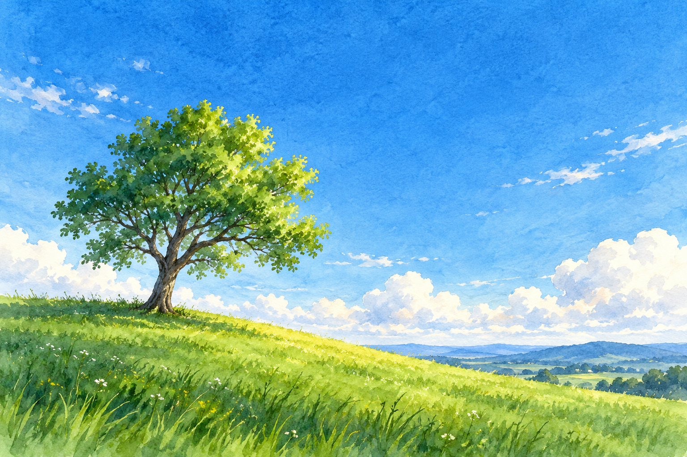

Пять нейросетей для учёбы и работы: с чего начать
Найти ответ легко. А вот превратить его в материал, который можно прочитать, послушать и показать другим, уже отдельная работа. Здесь проходим эту цепочку на одном вопросе: почему небо голубое
По пути появятся инструкция, заметка с источниками, картинка, аудиопересказ и слайды. Не обязательно открывать всё сразу: бери тот шаг, который нужен сегодня
Что понадобится
Браузер, аккаунты в нужных сервисах и короткая исходная заметка. Для блокнота и генерации картинки нужен аккаунт Google. Для остальных сервисов открой официальный сайт по ссылке в соответствующем шаге. Тариф и доступ зависят от аккаунта и страны, поэтому условия сверяй перед запуском
Солнечный свет кажется белым, но состоит из разных цветов. В атмосфере свет встречает молекулы воздуха и рассеивается. Короткие волны синей части света рассеиваются сильнее красных, поэтому днём с разных сторон неба к глазам приходит много синего света. У горизонта небо нередко бледнее: свет проходит через больший слой воздуха, рассеивается повторно и смешивается с отражённым светом. На закате путь через атмосферу ещё длиннее, и в прямом солнечном свете остаётся больше красных и жёлтых оттенков
Основа: NASA Space Place и NASA Earth Observatory
Скопируй заметку в отдельный текстовый файл. Она понадобится в блокноте, презентации и инструкции. Везде используем один материал, чтобы легко заметить, если нейросеть добавит факт от себя
Подготовь инструкцию в Claude
Начни с понятной инструкции по исходной заметке. В Claude можно показать небольшой образец тона и попросить инструкцию на основе той же заметки. Без образца слова «пиши в моём стиле» почти ничего не объясняют сервису
- Открой обычный чат и отправь запрос с заметкой
- Проверь, что три шага идут в порядке: белый свет, рассеяние, закат
- Если один шаг непонятен, напиши в том же чате: «Сделай второй шаг понятнее без новых фактов»
- Скопируй окончательный текст в свой документ и ещё раз сверь его с NASA
Обычный чат доступен в Free с ограничениями использования. Официальные планы Claude
Найди источник через Perplexity
Perplexity даёт ответ и ссылки на страницы, из которых его собрал. Это удобный вход в тему, но ссылка рядом с фразой ещё не означает, что источник действительно подтверждает её
- Открой сайт и вставь запрос в поле поиска
- Прочитай ответ, затем нажми на сноску рядом с утверждением о рассеянии синего света
- На открытой странице NASA найди тот же смысл. Если его нет, не переноси эту фразу в свою заметку
Базовый поиск доступен на Standard Free. Более глубокие режимы ограничены. Условия Perplexity
Нарисуй картинку в Gemini
К инструкции можно добавить изображение. В Gemini опиши предмет, композицию и стиль. Отдельно от редакционной иллюстрации выше получи и сохрани результат именно этого сервиса
- Войди в Gemini, вставь запрос и дождись изображения
- Посмотри, отвечает ли картинка запросу. Если деталь не совпала, попроси исправить её в том же чате
- Нажми Download full size и открой скачанный файл
Генерация требует входа; доступ зависит от страны, языка, возраста и текущих лимитов. Условия Gemini Apps
Сделай аудиопересказ в NotebookLM
NotebookLM сейчас также называется Gemini Notebook. Его отличие от обычного чата простое: сначала кладёшь собственный источник, потом просишь работать с ним. Нам достаточно заметки о небе
- Открой Gemini Notebook, создай блокнот и добавь заметку как текстовый источник
- В панели Studio выбери Audio Overview. Для беседы двух ведущих выбери подробный формат; краткий формат может звучать одним голосом
- Выбери русский язык результата и вставь запрос ниже
- После генерации открой плеер, прослушай начало, середину и конец. Скачай аудио кнопкой Download и сравни сказанное с заметкой
Стандартный доступ есть без платного плана, но доступ и квоты меняются. Условия и лимиты Gemini Notebook
Собери слайды в Gamma
Когда тему надо объяснить группе, удобнее разложить её на короткие слайды. Gamma предлагает структуру по теме, а ты проверяешь порядок и формулировки до экспорта
- Выбери создание презентации из текста и вставь запрос вместе с заметкой
- До генерации посмотри структуру: вопрос должен вести к объяснению, затем к сравнению дня и заката
- Открой готовые карточки и проверь их по заметке. Редакционную иллюстрацию ниже можно добавить на один слайд, отдельно от результатов сервиса
- Нажми Share → Export. Для просмотра выбери PDF, для правки в PowerPoint - PPTX. В меню проверь, что выбраны все карточки, затем открой скачанный файл

На Free можно создавать презентации и выгружать PDF/PPTX; экспорт сохраняет знак Gamma. Платные планы убирают бренд в новых выгрузках. Планы Gamma · Шаги экспорта и типовые ошибки
Памятка: какой инструмент открывать первым
| Задача | Сервис | Первый шаг |
|---|---|---|
| Написать понятную инструкцию | Claude | Показать образец тона и заметку |
| Найти объяснение с источниками | Perplexity | Задать вопрос и открыть сноску |
| Добавить изображение | Gemini | Описать предмет, формат и стиль |
| Послушать свой материал | Gemini Notebook | Добавить заметку как источник |
| Показать тему на слайдах | Gamma | Дать тему, исходный текст и структуру |
Финальный мини-урок складывается из пяти разных файлов и экранов: инструкция, заметка с открытыми источниками, изображение, аудио и презентация. Каждый отвечает за свою часть. Если факт не подтверждается исходником, исправь его до объединения материалов
Если что-то остановилось
- Лимит: используй уже сохранённую заметку и продолжи другой шаг, а к сервису вернись после обновления квоты
- Неверная ссылка: открой источник вручную и найди подтверждающий абзац; ссылку без подтверждения убери
- Аудио исказило термин: исправь исходный текст или запрос и создай новый пересказ
- Экспорт Gamma выгрузил один слайд: вернись в Share → Export и выбери все карточки
- Картинка недоступна в регионе: оставь слайд без неё либо используй отдельно подписанную редакционную иллюстрацию
Частые вопросы
Обязательно ли проходить все пять?
Нет. Если нужен только ответ, остановись после источника. Аудио, слайды, инструкция и картинка нужны под разные способы учёбы и работы
Почему NotebookLM называется Gemini Notebook?
Сервис меняет название, а старое имя осталось в привычных инструкциях и адресах. Для входа ориентируйся на актуальную страницу Google
Нужна ли подписка?
Все пять имеют стартовый доступ без платного плана, но функции ограничены лимитами и региональным доступом. Условия на официальных страницах каждого сервиса приведены рядом с шагом
Можно ли доверять ответу со ссылкой?
Нет без чтения источника. Открой сноску и найди абзац, который действительно подтверждает нужную мысль
Где искать скачанные файлы?
Обычно браузер кладёт их в «Загрузки», если ты не изменил место сохранения. Проверь меню загрузок браузера и открой файл перед тем, как использовать его дальше
Один мини-урок уже можно собрать вручную. Когда такие задачи повторяются, следующий вопрос звучит иначе: как соединить поиск, текст, слайды и выдачу материала в один процесс. Ниже - что нейросеть умеет, если не знаешь кода
Что можно делать с нейросетями, если не знаешь кода?
Чтобы почувствовать размах, посмотри Концентрат Ивана Сергеева. ИИ-агенты на твоих глазах собирают продукт, контент, сайты и воронки без кода. Это основа под любую цель: свои услуги, партнёрка, чужой бизнес. Три дня бесплатно, VIP с четвёртым днём - 990 ₽
Забрать КонцентратУже знаешь, чего хочешь? Тогда в мастер-группу Ивана: система продаж на ИИ без продюсера и технаря, сопровождение и сообщество
Заполнить анкету предзаписиНабор открывается редко, кто записался заранее, получает лучшую цену и бонусы. Платить сейчас не нужно
Реклама. ИП Сергеев И. С., ИНН 352511695540. erid: 2Vtzqvk2p6q